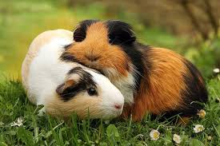
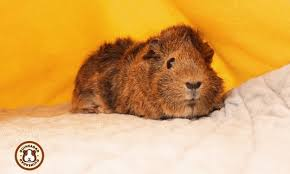
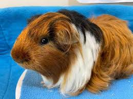
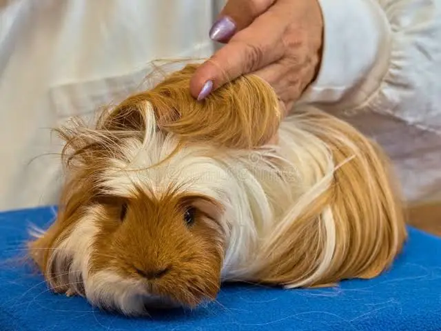
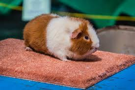
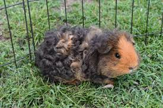
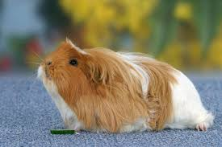
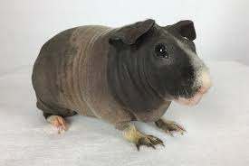
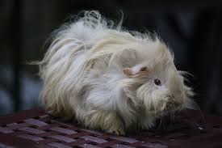

Whether you prefer a sleek "Potato" or a sentient "Mop," PurrPets has a guide to the most popular and rare Guinea Pig breeds!
| Breed | Photo | Coat Description | Grooming Need |
|---|---|---|---|
| American |  |
Short, smooth, and sleek. | Low (Weekly brushing) |
| Abyssinian |  |
Rough coat with 8-10 "rosettes" (swirls). | Medium (The "Bad Hair Day" look) |
| Peruvian / Alpaca |  |
Long, sweeping hair that covers the face. | High (Daily brushing + Trimming) |
| Silkie / Sheltie |  |
Long hair that grows backward from the head. | High (Needs a regular "haircut") |
| Teddy / Rex |  |
Short, kinky, wire-like fur (Feels like wool). | Medium (Very soft and bouncy) |
| Texel / Merino |  |
Long, curly ringlets like a sheep. | Extreme (The most difficult to groom!) |
| English Crested / Coronet |  |
Smooth with a single "crown" on the forehead. | Low to Medium |
| Skinny Pig / Baldwin |  |
Hairless (Skinny has some on nose; Baldwin is bald). | Special (Needs lotion and warmth!) |
| Lunkarya / Sheba |  |
Heavy, corkscrew curls (The "Sheep" pig). | High (Very dense and rustic) |
The Skinny Pig and Baldwin are unique because they have little to no hair! While they are great for owners with allergies, they require PurrPets special care: they eat more to stay warm and need soft bedding to protect their sensitive skin.
The Lunkarya (or "Lunk") originated in Sweden. It has a very unique coat that doesn't just curl—it stands out in a thick, wild mass. Unlike the Texel, their curls don't brush out easily, giving them the appearance of a very tiny, very confused sheep.